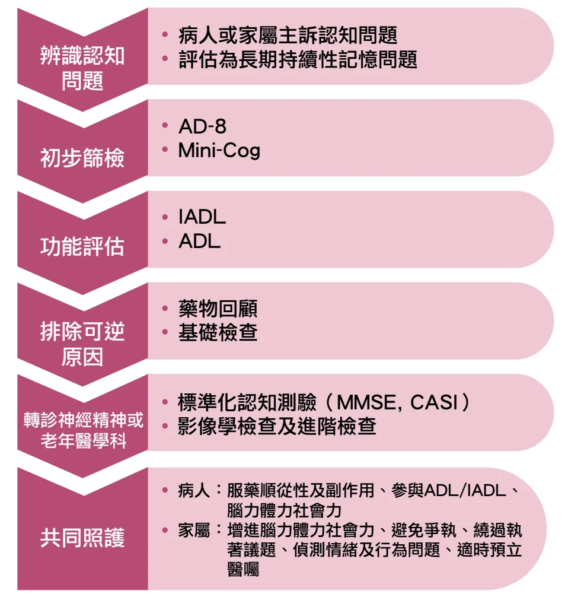

超高齡社會下的失智症防治：從早期篩檢、生物標記到全人共同照護
DSM-5 將傳統失智症更名為重度神經認知障礙症（Neurocognitive Disorders）。依據國外統計，高達 70% 的失智症個案由家庭醫師率先察覺。面對台灣 2025 年正式邁入老年人口逾 20% 的超高齡社會，家庭醫師掌握風險預防、初級篩檢、量表分級與非藥物／藥物照護，是維繫病人與家屬生活品質的關鍵。
7.99%
台灣 65 歲以上社區長者失智症盛行率（女性 9.36% > 男性 6.35%）。
56.88%
阿茲海默型居首；其次為血管型（22.91%）與巴金森氏症失智症（7.12%）。
45%
可改變的失智症危險因子累計占比，涵蓋生命早期、中期與晚期。
70%
國外統計由家庭醫師第一線最早察覺失智症病人的比例。
台灣社區長者失智症盛行率隨年齡倍增，85 歲以上逼近四分之一
危險因子分期與實證預防策略
不可變與 45% 可改變危險因子
- 不可變因子：年紀、基因 ApoE4。
- 生命早期：低教育程度。
- 生命中期：糖尿病、高血壓、高脂血症、肥胖症、身體活動量不足、憂鬱症、吸菸、飲酒、聽力障礙、頭部外傷。
- 生命晚期：視力障礙、社會孤立、空氣汙染。
四大預防方針
- 腦力、體力、社會力：增進用腦機會、維持運動與活動力、培養興趣與多社會參與。
- 怕病、怕窮、怕孤獨（國健署策略）：保護心就能保護腦（降低心血管風險）、維持老後定期財源、從年輕建立親友與社團連結。
- 地中海飲食：原型食物、五穀雜糧、豆類、蔬果、葷素蛋白質與好油均衡。
- 帶狀皰疹疫苗：回顧性世代研究顯示施打（活性減毒或基因重組疫苗）後新發生失智症減少，未來仍待臨床試驗證實。
診斷標準演進：從 DSM-5 到血液生物標記與 ATN 架構
DSM-5 臨床診斷四大要件
- 一項或多項認知面向顯著降低（複雜注意力、執行功能、學習和記憶、語言、知覺動作、社交認知），經由知情者／專業人員判斷及標準化測驗確認。
- 影響日常生活功能獨立性（至少工具性日常功能如吃藥需協助）。
- 非只出現於譫妄狀態。
- 無法以另一精神疾病（如憂鬱症、思覺失調症）做更好解釋。
分子生物標記與正子掃描
- 血液生物標記（症狀出現前十年偵測）：p-tau217 為早期偵測阿茲海默症最準確血液標記之一；p-tau181 可預測 MCI 是否進展為失智；血漿 Aβ42/40 比值下降反映大腦類澱粉蛋白沉積。
- ATN 生物學架構：依類澱粉蛋白（A）、Tau 蛋白（T）與神經退化（N）分類。
- Amyloid PET 與 Tau PET：前者早期見斑塊具高敏感與排除性，後者見神經纖維纏結與嚴重度相關；兩者均可提高診斷率 18%–19%。
初級醫療失智症標準評估流程與臨床工具
當醫師觀察到病人新發生常忘記服藥、忘記預約或難理解複雜指示，或家屬反映十大失智警訊（記憶減退影響生活、計畫解決困難、時間地點混淆、語言書寫困難、判斷力變差、退出社交、個性改變等）時，應依循六步驟流程進行系統化評估。
圖 1：初級醫療失智症評估流程

初步篩檢：AD-8 與 Mini-Cog
- AD-8（極早期篩檢）：由照顧者填答，≥2 題答「是」敏感度 91%、特異性 78%。
- Mini-Cog：三項記憶（腳踏車、紅色、快樂）→ 間隔 3–5 分鐘（問教育程度、年月日、100 連減 7 五次，家屬不得提示）→ 回憶三項（答對 3 項無失智、0 項懷疑失智、1–2 項接續畫時鐘 11 點 10 分）。
- Watson 畫時鐘計分法：將圓分四象限（12–2、3–5、6–8、9–11），前三象限缺正確數字各得 1 分，第四象限不正確得 4 分，總分 ≥4 分為異常。
功能口訣與 3D 鑑別
- IADL（SHAFT）：購物（S）、家務（H）、財務（A）、備餐（F）、運輸／電話（T）、服藥（M）、洗衣（L）；忘記服藥常最早出現。
- ADL（DEATH+C）：穿衣（D）、飲食（E）、行動移位（A）、如廁（T）、洗澡（H）、大小便控制（C）；退化易致營養不良、感染、廢用症候群、跌倒與壓瘡。
- 3D 鑑別：譫妄為急性腦衰竭；失智為慢性腦衰竭（先認知後憂鬱，常答錯但接近答案）；憂鬱症先憂鬱後認知，常答「不知道」。
四大病因與可逆因子排除
- 四大病因：AD（徐緩漸進）、血管性（三高、階梯性下降）、FTD（個性改變／不當社會行為）、DLB（波動性認知、迷路、視幻覺）。
- 必查檢驗：CBC、血糖、肝腎功能、TSH、電解質、維生素 B12、葉酸、同半胱胺酸、梅毒。
- 藥物與其他：檢視 benzodiazepine、抗膽鹼藥物；排除常壓性水腦、腫瘤、巴金森氏症（症狀 1 年後失智）、酒精／重金屬中毒；並進行周全性老年評估十大項目。
失智症嚴重度評估量表：CDR 與 FAST 完整分級表
表 1：臨床失智量表 (Clinical Dementia Rating, CDR)
| 評估面向 | 0 | 0.5 | 1 | 2 | 3 |
|---|---|---|---|---|---|
| 記憶 | 未有記憶喪失，或偶爾遺忘 | 持續性輕微健忘；片段性回憶事件細節；「良性」遺忘 | 中度記憶喪失；對近期事件之回憶明顯受影響；影響日常生活 | 嚴重記憶喪失；僅能保留深刻學習的內容；新資訊快速遺忘 | 嚴重記憶喪失；僅記得零星片段 |
| 定向感 | 人、時、地定向感正常 | 涉及時間順序關聯稍有困難，其餘定向感皆正常 | 涉及時間順序關聯時有中等程度困難；人、地定向感正常；有時出現地點定向障礙 | 涉及時間順序關聯時有嚴重困難；經常有時間定向障礙，且往往有地點定向障礙 | 僅存對人物的定向感 |
| 判斷及問題解決 | 有效解決日常問題和處理商業、財務事宜；判斷能力和過往一樣好 | 解決問題、分析事物異同有輕微障礙 | 解決問題、分析事物異同有中度障礙；社交判斷通常仍維持 | 解決問題、分析事物異同有嚴重障礙；社交判斷通常有障礙 | 無法做判斷或解決問題 |
| 社區活動 | 工作、購物、志工和社交活動皆如常獨立進行 | 前述活動有輕微障礙 | 仍參與前述活動但未能獨立行之；表面看上去正常 | 無法獨立勝任家庭外事務；外表看似正常 | 無法獨立勝任家庭外事務；外表看起來有病態 |
| 家庭活動和嗜好 | 家庭生活、興趣嗜好、知性活動如常維持 | 前述活動有輕微障礙 | 家庭功能有輕微但明確的障礙；放棄較為複雜之家務、興趣嗜好 | 僅能做簡單家務；興趣嗜好侷限且勉強維持 | 家中無明顯功能 |
| 自我照料 | 自我照護能力完備 | 需要旁人提醒 | 在穿衣、衛生及整頓個人用品方面需要協助 | 個人照護需大量協助；頻繁失禁 | |
表 2：阿茲海默失智症功能評估分級量表 (Functional Assessment Staging Test, FAST)
| FAST | 臨床診斷 | 特徵描述 |
|---|---|---|
| 1 | 正常 | ・無主觀或客觀功能衰退 |
| 2 | 懷疑輕度認知障礙 |
・抱怨常常忘記他人或物件的名字 ・忘記物件擺放的位置 ・自己覺得認知能力有問題 ・他人察覺不到職業或社交功能上有問題 |
| 3 | 輕度認知障礙 |
・忘記重要的約會 ・難以前往不熟悉的地方 ・明顯發現職業及社交功能衰退 ・仍能處理日常生活，如：購物、處理財政等 |
| 4 | 輕度失智症 |
・處理日常生活中較複雜的事項時出現困難（購物、財務、備餐等） ・使用的字詞變少，不願意說話 ・仍然能自行更衣、沐浴、選擇衣服及來往熟悉的地方 |
| 5 | 中度失智症 |
・需要協助處理日常生活事務 ・需他人協助選擇適合的衣服 ・很多時候需他人提示才記得要洗澡 ・可以自行穿衣及洗澡 |
| 6 | 中重度失智症 |
・6a 穿衣、穿鞋或綁鞋帶出現困難 ・6b 難以自行洗澡，如：調較水溫、清洗身體、弄乾身體等出現困難 ・6c 難以自行如廁，如：沖廁、擦淨、穿好褲子等出現困難 ・6d 出現小便失禁情況 ・6e 出現大便失禁情況 |
| 7 | 失去語言能力及活動能力、神志不清 |
・7a 只能使用數個字詞 ・7b 只能說出一個有意義的字詞，如「好」、「不好」。如果連這個字詞也說不出，就只叫喊發出聲音 ・7c 行走需他人協助 ・7d 無法自行坐好 ・7e 無法微笑、認不出熟悉的人和物 ・7f 無法自行抬頭 |
非藥物照護實務：人性化溝通、照護 ABC 與 BPSD 3R 原則
人性化溝通 (Humanitude) 四大支柱
- 平視（gaze）：在患者平視視野正前方大動作招手打招呼。
- 問候（speech）：接近後以言語熱絡問候。
- 拍觸（touch）：用手與患者肩膀熱絡接觸建立連結。
- 誘導站立（verticality）：鼓勵並誘導站立活動。
失智症照護 ABC
- A (Activity)：參與購物、摺衣等常規；白天不包尿布，觀察如廁習性順勢如廁，避免日間長期睡眠。
- B (Behavior)：良好睡眠、避免爭執，透過咖啡、園藝、小動物、閱讀建立連結（attachment）與專注（occupation）。
- C (Cognition)：演算、寫字、書法、畫圖、唱歌、日記等智力練習。
BPSD 辨識與 3R 非藥物原則
- 精神症狀：憂鬱、冷漠、不安、焦躁、幻覺、妄想、誤認。
- 行為症狀：漫遊、重複行為、暴言暴力、睡眠／飲食障礙、病態收集、日落症候。
- 3R 原則：再確認（reassure）安撫 → 再考慮（reconsider）換角度找原因 → 再引導（redirect）轉移專注力。
藥物治療進展與 BPSD 用藥安全原則
認知功能藥物與最新抗體治療
- 健保給付藥物：經神經科或精神科確診之阿茲海默症或巴金森氏症失智症，可申請膽鹼酶抑制劑或 NMDA 受體拮抗劑。
- 乙型類澱粉標靶抗體（Lecanemab / Donanemab）：Clarity AD 第三期試驗（50–90 歲早期失智症，每兩週注射 lecanemab 10 mg/kg 共 18 個月）顯著減少類澱粉沉積（差別 -59.1 centiloids），約五個月後減緩退化 27%–40%；須注意副作用 ARIA-E（腦水腫）或 ARIA-H（腦出血）（70% 無症狀，部分出現意識混亂、頭痛、癲癇、局部神經症狀）。
- 血管性失智症：健保無給付，經濟許可者可自費 Donepezil（10 mg 先用半顆、睡前服減少噁心）；注意多夢、腹瀉及心搏徐緩、房室傳導阻滯、心房顫動、QT 延長等心臟風險。
BPSD 用藥：低量開始、緩慢調整 (Start Low, Go Slow)
- 啟動原則：僅在症狀對病人或家人造成困擾時才用藥；分為抗憂鬱劑、抗乙醯膽鹼酶藥物、抗精神病藥物與抗癲癇藥物四大類。
- 抗精神病藥警語：可能增加腦中風及死亡率，應採最小有效劑量、定期再評估，且不宜作為單純安眠劑。
- 實務選藥順序：睡眠／睡前精神行為問題先用 Trazodone (Mesyrel)，無效再選鎮定作用之非典型抗精神病藥 Quetiapine (Seroquel)；若白天亦有症狀，優先選安眠作用較少之 Risperidone 滴劑。單純失眠以增加日間活動為主、安眠藥為輔。
2025 年台灣每五人中即有一位長者；早期發現、系統評估、適時轉介、全人照護與健康促進，是家庭醫師面對超高齡社會的優先課題。
主要參考資料
- 衛生福利部：最新臺灣社區失智症流行病學調查結果（2026 年 3 月檢索）。
- Livingston G, et al. Dementia prevention, intervention, and care: 2024 report of the Lancet standing Commission. Lancet 2024; 404: 572-628.
- Eyting M, et al. A natural experiment on the effect of herpes zoster vaccination on dementia. Nature 2025; 641: 438-46.
- 台灣失智症協會：失智症診療手冊（衛生福利部出版，2017）。
- Palmqvist S, et al. Plasma phospho-tau217 for Alzheimer's disease diagnosis. Nat Med 2025; 31: 2036-43.
- Cano A, et al. Clinical value of plasma pTau181 to predict Alzheimer's disease pathology. EBioMedicine 2024; 108: 105345.
- Altomare D, et al. Diagnostic value of amyloid-PET and tau-PET. Eur J Nucl Med Mol Imaging 2021; 48: 2200-11.
- Galvin JE, et al. The AD8: a brief informant interview to detect dementia. Neurology 2005; 65: 559-64.
- 陳晶瑩：周全性老年評估。家庭醫師臨床手冊第五版，2022：725-739。
- 李怡萱、陳晶瑩等：失智症行為及精神症狀的非藥物處置。台北市醫師公會會刊，2013；57：33-37。
- Reuben DB, et al. Dementia Prevention and Treatment: a narrative review. JAMA Intern Med 2024; 184: 563-72.
- van Dyck CH, et al. Lecanemab in Early Alzheimer's Disease (Clarity AD). N Engl J Med 2023; 388: 9-21.
- 林克能、劉秀枝：臨床失智評量表。Acta Neurologica Taiwanica 2003; 12: 154-65。
- Reisberg B. Functional assessment staging (FAST). Psychopharmacology Bulletin 1988; 24: 653-9.
- 賽馬會智健康腦退化檢測及社區支援計畫：阿茲海默症的七個階段（2025）。